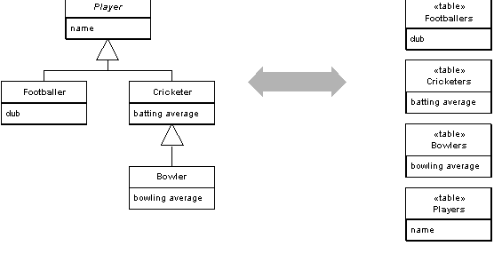

Class Table Inheritance (Наследование с таблицами классов)

Паттерн проектирования Class Table Inheritance
Описание Class Table Inheritance
Представляет иерархию наследования классов в виде структуры БД, когда одна таблица отвечает одному классу.
Одно из самых заметных несоответствий между объектной и реляционной моделью - отсутствие в РБД поддержки наследования. Иногда необходима структура БД, точно соответсвующая объектной модели и позволяющая наращивать дерево наследования. Паттерн Class Table Inheritance (Наследование с таблицами классов) предоставляет такие возможности, используя одну таблицу на один класс из структуры наследования.
Примеры реализации
SQL Схема
-- Базовая таблица для всех пользователей
CREATE TABLE users (
id INT PRIMARY KEY AUTO_INCREMENT,
name VARCHAR(100) NOT NULL,
email VARCHAR(100) NOT NULL,
created_at TIMESTAMP DEFAULT CURRENT_TIMESTAMP
);
-- Таблица для клиентов
CREATE TABLE customers (
user_id INT PRIMARY KEY,
phone VARCHAR(20),
address TEXT,
loyalty_points INT DEFAULT 0,
FOREIGN KEY (user_id) REFERENCES users(id) ON DELETE CASCADE
);
-- Таблица для сотрудников
CREATE TABLE employees (
user_id INT PRIMARY KEY,
employee_id VARCHAR(20) UNIQUE NOT NULL,
department VARCHAR(50),
salary DECIMAL(10,2),
hire_date DATE,
FOREIGN KEY (user_id) REFERENCES users(id) ON DELETE CASCADE
);
-- Таблица для менеджеров
CREATE TABLE managers (
user_id INT PRIMARY KEY,
employee_id VARCHAR(20) UNIQUE NOT NULL,
department VARCHAR(50),
salary DECIMAL(10,2),
hire_date DATE,
team_size INT DEFAULT 0,
budget DECIMAL(12,2),
FOREIGN KEY (user_id) REFERENCES users(id) ON DELETE CASCADE
);
-- Вставка данных
-- Создание клиента
INSERT INTO users (name, email) VALUES ('John Doe', 'john@example.com');
SET @user_id = LAST_INSERT_ID();
INSERT INTO customers (user_id, phone, address, loyalty_points)
VALUES (@user_id, '+1234567890', '123 Main St', 100);
-- Создание менеджера
INSERT INTO users (name, email) VALUES ('Bob Johnson', 'bob@company.com');
SET @user_id = LAST_INSERT_ID();
INSERT INTO managers (user_id, employee_id, department, salary, hire_date, team_size, budget)
VALUES (@user_id, 'MGR001', 'IT', 95000.00, '2022-06-01', 5, 500000.00);
-- Запросы
-- Получить всех клиентов с их данными
SELECT u.*, c.phone, c.address, c.loyalty_points
FROM users u
JOIN customers c ON u.id = c.user_id;
-- Получить всех сотрудников (включая менеджеров)
SELECT u.*, e.employee_id, e.department, e.salary, e.hire_date
FROM users u
JOIN employees e ON u.id = e.user_id
UNION
SELECT u.*, m.employee_id, m.department, m.salary, m.hire_date
FROM users u
JOIN managers m ON u.id = m.user_id;Использована иллюстрация с сайта Мартина Фаулера.